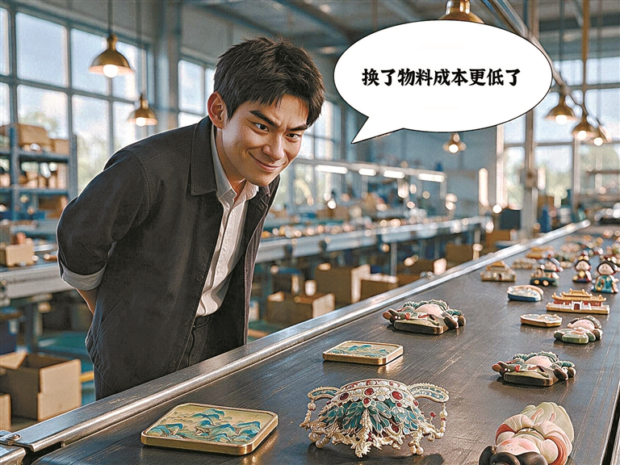

4月27日，浙江省金华市金东区法院以侵犯著作权罪，判处主犯钱某有期徒刑三年六个月，并处罚金80万元。此前，钱某团伙1:1仿造各大文博IP冰箱贴，采取"赔钱转头再卖"的战术规避维权，共制售80余万枚，销售金额达1660余万元。
一枚小小的冰箱贴，从文创柜台的"网红"，变成了一条规模化制假的生意。当它被成批量复制、以低价铺货时，伤害的是无数文博机构好不容易做出来的文化口碑。
蹭IP的"小聪明"，算下来是一笔"刑"的账。
所以这不是普通的"山寨"，而是踩了著作权的红线。
表层看，是文创爆火、利润高；但更深一层，是设计复制成本低、外观鉴别门槛高——普通消费者很难凭肉眼分辨"官方授权"与"高仿复刻"，给了制假者可乘之机。
而"赔钱转头再卖"的战术，暴露出维权过程中的时间差与成本差：等正版方完成取证、投诉，假货可能已经换壳再上架。这种套利空间，正是假货盯上的缝隙。
假货盯上的，是正版好不容易养出的"审美红利"。
真正被稀释的，不是一两枚贴纸，而是消费者对"正版"的信任。
从行业视角看，文博文创的走红本是好事——它让历史文化以轻盈的方式走进日常生活。但要长久，离不开授权体系的规范、平台的主动打假，以及消费者"认准官方渠道"的意识。
正版文创的价值，在于背后的文化背书与品质保障；当假货以低价横行，被稀释的不仅是收入，更是大家愿意为"文化"买单的那份心意。
买得明白，才买得安心。
守护版权，就是守护我们愿意为"文化"买单的信任。
回到那80余万枚假贴：它们本可以是80余万次对历史的有温度的连接，却变成了侵权的注脚。
文创的意义，在于把博物馆里的美，认真地交到每个人手里。当我们选择官方渠道、拒绝来路不明的"同款"，其实也是在为这份文化价值投票。愿每一次消费，都能真正托举起创作者的诚意，而不是喂养一条灰色的复制链。